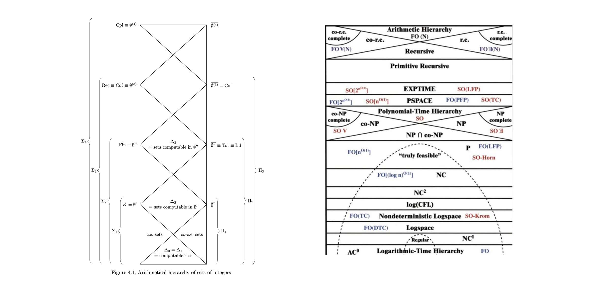
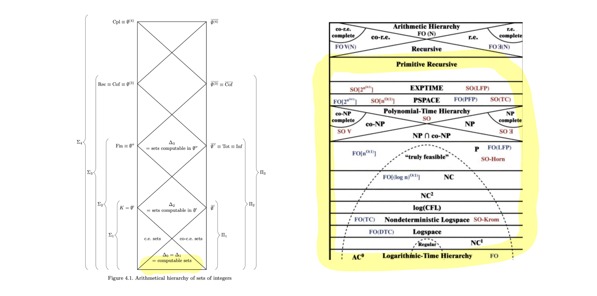

Chapter 1#
We survey the precursors to the notion of computation in the 1920s. The primary formal notion is that of primitive recursion. It was articulated formally by Skolem in 1923, and we discuss the motivations for his definition. At first approximation, the notion is: a function is effective in this sense if its evaluation procedure for step \(m>0\) is derived from step \(m-1\) by recourse to functions already known to be effective.
Primitive recursion idea and examples#
Definition (primitive recursion)#
Define a function \(f\) on natural numbers by specifying
Base: how it is defined on input \(m=0\)
Iterator: how it is defined on \(m>0\) in terms of how it is defined on the previous step \(m-1\).
To figure out the value of e.g. \(f(3)\), write it in terms of \(f(2)\) and the iterator; then write \(f(2)\) in terms of \(f(1)\) and the iterator; then write \(f(1)\) in terms of \(f(0)\) and the iterator; then use base to figure out \(f(0)\).
Example (addition)#
To figure out the value of \(5+2\), we proceed as follows:
\(5+2 = (5+1)+1 =(5+0)+1+1 = 5+1+1 =6+1=7\)
# here is a python implementation
def add(n,m):
if m ==0:
return n
return add(n,m-1)+1
add(5,2)
7
Visualizing with Python tutor#
Python tutor allows one to ‘step through’ very simple programs. For our purposes, it illustrates that the way that a modern programming language like python implements primitive recursion is similar to our intuitive procedure described above for implementing it.
Show code cell content
# this calls up python tutor (https://pythontutor.com),
# which for very simple programs steps one through the computation
from metakernel import register_ipython_magics
register_ipython_magics()
Show code cell source
%%tutor
def add(n,m):
if m ==0:
return n
return add(n,m-1)+1
add(5,2)
Example (multiplication)#
In particular, we have:
\(5*2 = 5*1+5 = 5*0+5+5=5+5=10\)
%%tutor
def mult(n,m):
if m ==0:
return 0
return mult(n,m-1)+n
mult(5,2)
Below is a version where we appeal explicitly to our prior definition of addition instead of the built in version of addition. However, if one looks at it with the python tutor, it takes longer (about 63 steps).
%%tutor
def add(n,m):
if m ==0:
return n
return add(n,m-1)+1
def mult(n,m):
if m ==0:
return 0
return add(mult(n,m-1),n)
mult(5,2)
Primitive recursion on strings#
In many cases, it is more natural to compute on strings of symbols than on numbers.
E.g. we could compute on strings from the latin alphabet \(a, b, \ldots, z\).
Definition (primitive recursion on strings)#
Define a function \(f\) on strings by specifying
Base: how it is defined on the the length zero string \(\epsilon\)
Iterator: how it is defined on length \(m>0\) strings in terms of how it is defined on length \(m-1\) strings and on the last entry.
To figure out the value of e.g. \(f(aba)\), use iterator to compute it in terms of \(f(ab)\) and last entry \(a\); then use iterator to compute \(f(ab)\) in terms of \(f(a)\) and last entry \(b\); then compute \(f(\epsilon)\).
In this case, the iterator needs to tell you how to act when the last entry is \(a\), how to act when it is \(b\), etc.
Example (flipping a’s to b’s)#
Define
In particular, where \(\cdot^{\ast}\) changes \(a\) to \(b\) and vice-versa:
\(\mathrm{flip}(aba) = \mathrm{flip}(ab)a^{\ast} = \mathrm{flip}(a)b^{\ast}a^{\ast} = a^{\ast} b^{\ast} a^{\ast} = b b^{\ast} a^{\ast}= baa^{\ast} =bab\)
%%tutor
# a simple python program for flipping a's to b's
# and vice versa in a string of a's and b's.
def flip(str):
if str =='':
return ''
if str[-1] == 'a':
return flip(str[:-1])+'b'
if str[-1] == 'b':
return flip(str[:-1])+'a'
flip('aba')
Primitive recursion formal definition#
Since it is in keeping with the historical record, we’ll present the formal definition in terms of computation on numbers rather than strings.
Definition (definition by primitive recursion, binary functions)#
Suppose a base function \(B:\mathbb{N}\rightarrow \mathbb{N}\) and an iterator function \(I:\mathbb{N}^{3}\rightarrow \mathbb{N}\) are given. Then the function \(f:\mathbb{N}^{2}\rightarrow \mathbb{N}\) defined by primitive recursion from this base and iterator is the function which satisfies the following, for all \(n,m\):
One can similarly define unary, ternary functions by primitive recursion.
Example (addition redeux)#
We must find functions \(B\) and \(I\) such that
But just choose \(B(n)=n\) and \(I(n,m,\ell)=\ell+1\).
Then we check:
\(n+0 =n= B(n)\)
\(n+m = n+(m-1)+1 = I(n,m-1,n+(m-1))\).
Example (multiplication redeux)#
We must find functions \(B\) and \(I\) such that
But just choose \(B(n)=0\) and \(I(n,m,\ell)=\ell+n\).
Then we check:
\(n*0 =0= B(n)\)
\(n*m = n*(m-1)+n = I(n,m-1,n\ast(m-1))\).
Definition (primitive recursive functions)#
The primitive recursive functions on natural numbers are defined as follows:
The identity function and constant functions and successor function \(S(n)=n+1\) are primitive recursive. Further, the projection functions e.g. \(f(n,m)=m\) and \(g(n,m)=n\) are primitive recursive.
The composition of primitive recursive functions is primitive recursive. That is, the result of putting primitive recursive functions into the inputs of other primitive recursive functions is primitive recursive. E.g. \(f(x,y)=g(h(x,y), k(y))\) is primitive recursive if \(g,h,k\) are primitive recursive.
If the base function and the iterator function are primitive recursive, then the function defined from primitive recursion by this base and iterator is also primitive recursive.
Nothing else is a primitive recursive function.
In other words: primitive recursive functions are closure of successor and projection and identity under composition and definition by primitive recursion.
The map#
We’re going to be looking at a number of different notions of computation in this course.
There are two maps we will use to orientate ourselves.
The come from [Soare, 2016] p. 104 and the cover of [Immerman, 2012]
This is the basic map, and see here for a standalone version of it:

The map on left is of non-computable sets of numbers. The bottom is the computable or recursive sets of numbers.
The map on right zooms in on the computable sets of numbers and classifies them further.
This is the map with primtive recursive sets highlighted:

Skolem on primitive recursive functions#
Skolem on foundations#
The first to define the primitive recursive function was Skolem in the 1920s.
Skolem was motivated by considerations in the foundations of mathematics.
He thought that set theory was not a good foundation for mathematics, for reasons including the following:
There is no absolute notion of set– it depends rather on what first-order model of set theory you are in (this is related to his epynmous paradox).
It is circular to base number on set, since to prove things about sets you will need to prove things by mathematical induction, which presupposes numbers (this point, or a version of it, was originally made by Poincaré against the early Hilbert).
While set theory is widely used and applicable today, these two considerations of Skolem still resonate in modern philosophy of mathematics (see [Button and Walsh, 2016]).
Our interest right now is in what Skolem thought the solution was.
Why Skolem needed to define primitive recursion#
Skolem was moved to try to figure out how much mathematics could be done just with concepts related to number:
If we consider the general theorems of arithmetic to be functional assertions and take the recursive mode of thought as a basis, then that science can be founded in a rigorous way without the use of [quantifiers] ([Skolem, 1967] p. 304)
It occurred to me [in autumn of 1919] that already the use of logical variables that they call “real” would surely suffice to provide a foundation for a large part of mathematics ([Skolem, 1967] p. 332).
Since Skolem wanted to base mathematics off of recursion, he needed to define recursion and then show that a whole lot of mathematics was computable.
And Skolem’s definition of recursion was the notion of primitive recursive function.
It is not clear if Skolem is presenting this as an axiomatization or as something else.
The limits of primitive recursion#
Definition (Ackermann function)#
In 1925 (published in [Ackermann, 1928]), Ackermann found a function which was recursive in some sense and which was not primitive recursive. It is:
Where we define:
A function like this was found simulatenously by Sudan (see [Calude et al., 1979])
Experience suggests that this definition is hard to parse.
Intuition behind the Ackermann function#
The Ackermann function becomes more intuitive when one realizes that it is designed so that:
\(\varphi_0(n,m)= n+m\)
\(\varphi_1(n,m)= n*m\)
\(\varphi_2(n,m) = n^m\)
\(\varphi_3(n,m) = n^{n^{\cdots^n}}\), with \(m\)-many \(n\)’s in the exponent.
Ackermann showed that it was not primitive recursive by showing that \(\varphi(n,n,n)\) grew faster than any primitive recursive function. For a proof see[Cori and Lascar, 2001] \(\S\S\) 5.1, 5.2.1.
Unsurprisingly then, the Ackermann function is nearly impossible to compute on modern computers (see below)
Public comment on the Ackermann function in the 1920s#
At the time, the only public comment on the computability of this function was due to Ackerman’s advisor Hilbert,who wrote that
To be sure, we could now define \(\varphi_{\ell}(n,m)\) for variable \(\ell\) by means of substitutions and recursions, but these recursion would not be ordinary, stepwise ones; rather, we would be led to a manifold simulatenous recursion, that is a recursion on different variables at once, and a resolution of it into ordinary, stepwise recursions would be possible only if we make use of the notion of function variable ([Hilbert, 1967] p. 388).
From our perspective, what this shows is that the concept of recursion was in a bit of a flux in the 1920s. Primitive recursion was the paradigm they were working with, but they knew that there were functions which were recursive in some more general sense but which we were not primitive recursive.
# here is a python implementation of the ackermann function
# it works for e.g. 3,2,2 but runs out of time/space for 3,3,3
import sys
sys.setrecursionlimit(10000000)
def alpha(n,l):
if l <2:
return l
return n
def phi(l,n,m):
if l==0:
return n+m
if m==0:
return alpha(n,l)
return phi(l-1,n, phi(l,n,m-1))
phi(3,2,2)
6143
The Ackermann function in mathematical nature#
The Ackermann function shows up occasionally in mathematical nature.
A subset \(I\) of polynomials \(\mathbb{Q}[X_1, \ldots, X_N]\) is an ideal if it is closed under addition, and by multiplication by other polynomials.
Hilbert showed that these are ideals are always finitely generated (the Hilbert Basis Theorem, which also holds when the rationals are replaced by other fields).
This implies that any ascending chain of ideals \(I_0 \subseteq I_1 \subseteq I_s\subseteq\cdots\) eventually stops growing, e.g. there is \(s\) such that \(I_t=I_s\) for all \(t\geq s\).
Further, if \(I_s\) is generated by polynomials of degree \(\leq s\), then all such chains stop at the same time, depending only on \(N\).
The problem of computing from \(N\) this stopping number is not primitive recursive. Indeed, it is an Ackermann-like function. See [Socías, 1992].
More generally, computational aspects of algebraic geometry seem are good source of computable but hard to compute functions and operations. These flow in part from the Buchberger algorithm. See [Cox et al., 1997] and [Simpson, 1988].